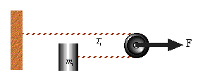

Question #5
We have an arrangement of pulleys as indicated below. What is the acceleration of M in terms of F?

The acceleration of the block relative to can be realized by looking at the small displacement of the rope for each small displacement of the pulley. Since the rope wraps once around the pulley the rope is "stretched" twice the distance the pulley moves. i.e. the rope moves 2 δx for each δx the pulley moves. Since velocity is Δx/Δt the velocity of is twice that of the pulley. By extension the acceleration of  is also twice that of the puley.
is also twice that of the puley.